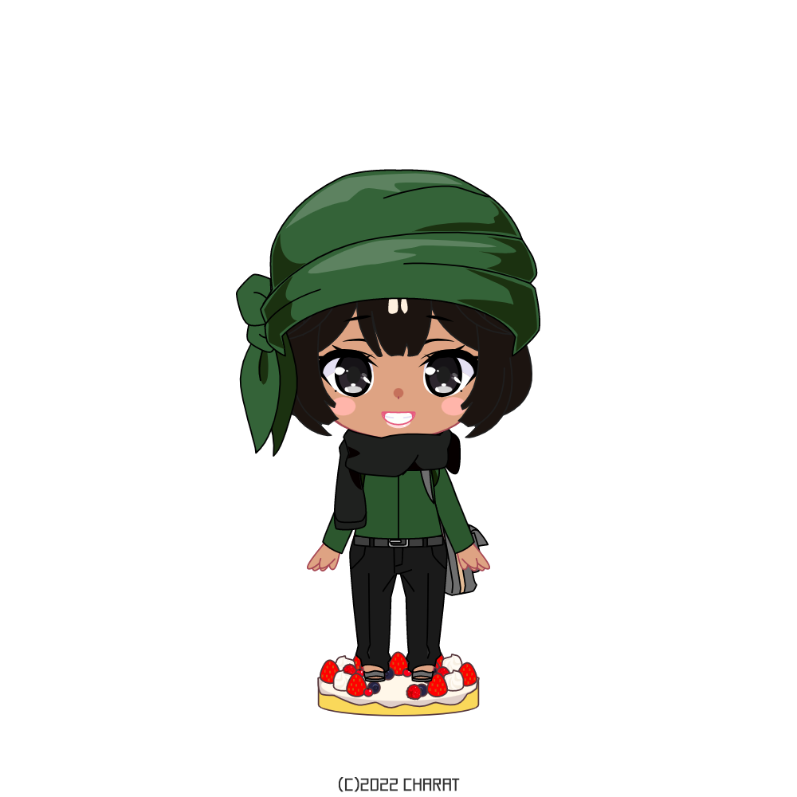
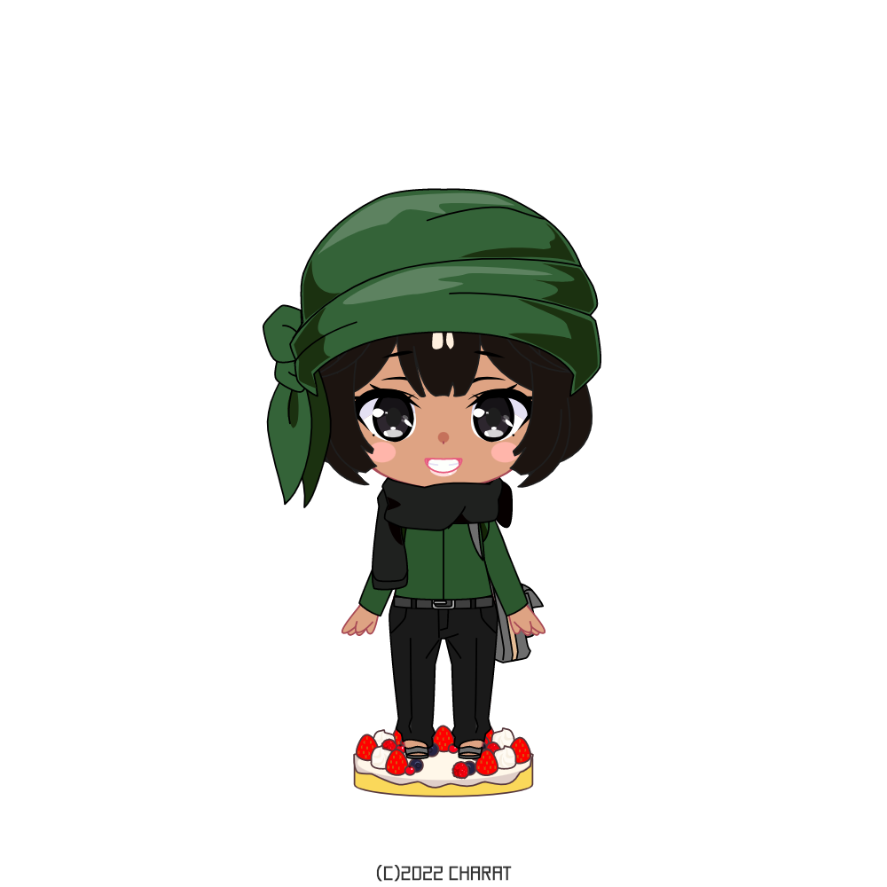
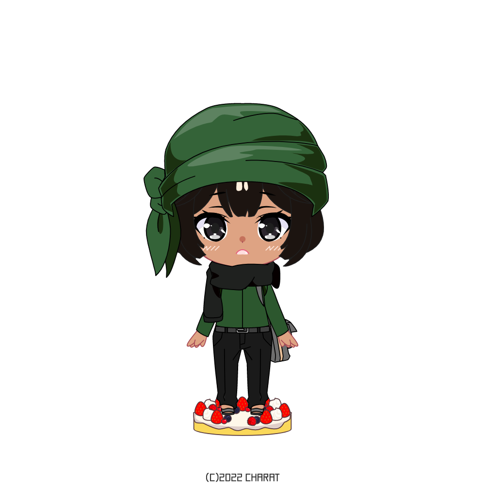
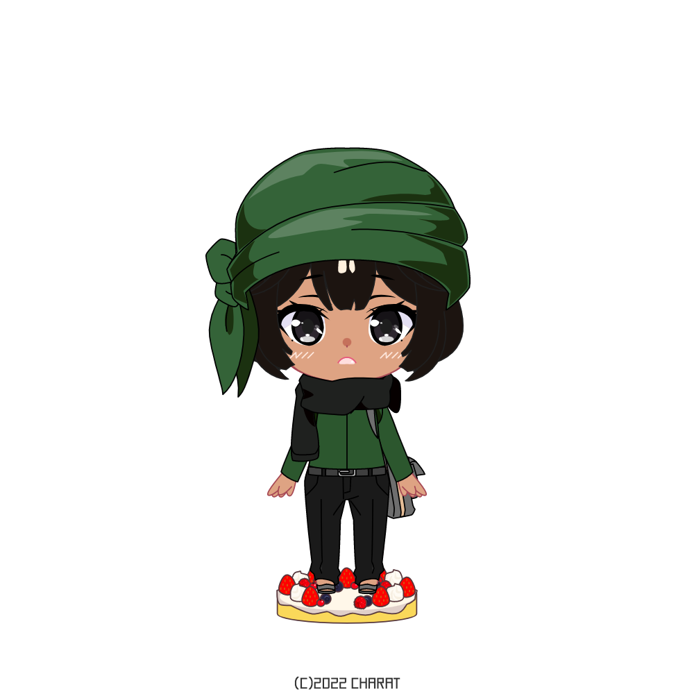

 



Mariage? Déménagement?
2025-...?
Je suis pas devin mais comme la vie d'adulte a été définitivement lancée, il y a de grandes chances qu'à ce stade de ma vie je serai mariée!? Même si c'est dans loooooooongtemps, c'est toujours bien de savoir se projeter. Avoir mon propre chez-moi c'est une belle façon d'ouvrir un nouveau chapitre dans ma vie, et on verra où tout ça ça va mener...

Time to work!
2024
Après avoir bien savouré mon diplôme et m'être reposée bien comme il faut, il est temps pour moi de me lancer dans la vie active. Ce n'est que le début de ma longue carrière insha'Allah, on gravira les échelons au fur et à mesure du temps jusqu'à ce que je devienne une véritable entrepeneuse.

Bye bye school!
2023
L'année prochaine risque d'être un moment charnière pour moi, si tout se passe bien je décrocherai mon master ce qui signifiera par la même occasion la fin de mon parcours scolaire officiellement. Un moment d'émotion forcément mais également un moment de soulagement après avoir fourni tant d'efforts. On va fêter ça comme il se doit!

İstanbul'a gidelim!
2022
Rien de majeur à signaler si ce n'est que j'ai réussi mon année Al Hamdulilah, ça continue à poursuivre tout doucement son petit bonhomme de chemin. Ce qui passe par un mémoire médiatique épuisant mais avec un chouette groupe et en postulant pour un stage à l'étranger. Istanbul en ligne de mire et donc Nahed Situations sera parée!

Bachelor dans la poche!
2021
J'ai décroché mon bachelor au cours de cette année-là, malheureusement à cause du COVID j'ai pas eu une cérémonie de proclamation digne de ce nom mais ça m'empêche pas d'être très heureuse d'avoir accompli la moitié du boulot. Le plus dur était désormais derrière moi, j'ai gagné ainsi une dose de motivation supplémentaire pour entamer mon deuxième cycle et pouvoir terminer en beauté avec un master tout fraîs.